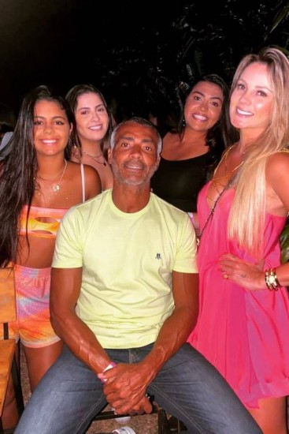

Seja bem-vindo ao meu site, grande amigo! Nesse site irei te dar motivos e caminhos para você seguir sua vida amorosa
Razões para ser um homem infiel:
Você poderá sair para curtir em literalmente TODAS AS FESTAS POSÍVEIS!!
Você será mais feliz sozinho, do que mal acompanhado.
Você não terá uma mulher em sua casa enchendo seu saco o dia inteiro.

Razões para ser um homem fiel:
Você será um homem íntegro e confiável perante aos olhos da sociedade.
Você poderá construir uma família e viver bem apenas COM UMA MULHER!
Você poderá se tornar o homem MAIS ROMÂNTICO DO MUNDO!!
Agora, a disponibilidade que nosso site oferece:
MANUAL DO HOMEM FIEL
Comunicação aberta e honesta: Estabeleça uma comunicação sincera com seu parceiro. Fale sobre seus sentimentos, preocupações e expectativas em relação ao relacionamento. Esteja aberto para ouvir e compreender as necessidades e desejos do seu parceiro também.
Respeito mútuo: Respeite seu parceiro como indivíduo. Valorize suas opiniões, sentimentos e espaço pessoal. Trate-os com cortesia, gentileza e consideração em todas as situações.
Compromisso com o relacionamento: Comprometa-se em manter e fortalecer o relacionamento. Esteja disposto a fazer sacrifícios, compromissos e esforços para resolver conflitos e enfrentar desafios juntos.
Fidelidade emocional: Esteja presente emocionalmente para seu parceiro. Demonstre seu amor, carinho e apoio de maneiras significativas. Cultive uma conexão emocional forte e saudável.
Limites claros: Estabeleça limites claros e respeite os limites do seu parceiro. Isso inclui respeitar a privacidade um do outro e evitar comportamentos que possam ser interpretados como inadequados ou desrespeitosos.
Autoconhecimento e autocontrole: Conheça a si mesmo e suas vulnerabilidades. Esteja ciente das tentações e armadilhas que podem surgir no relacionamento. Desenvolva habilidades de autocontrole para resistir a impulsos prejudiciais e tomar decisões conscientes.
Manter a chama acesa: Cultive a intimidade física e emocional em seu relacionamento. Invista tempo e esforço para manter a paixão e o romance vivos. Explore novas maneiras de se conectar e se divertir juntos.
Compromisso com o crescimento pessoal: Busque continuamente o crescimento pessoal e o desenvolvimento emocional. Esteja aberto para aprender com suas experiências e trabalhar em áreas que precisam de melhoria. Isso não só beneficia você como indivíduo, mas também fortalece seu relacionamento.
MANUAL DO HOMEM INFIEL
Evite qualquer avanço no relacionamento da companheira, não tenha conversas sinceras, MINTA!!
Não mantenha o respeito mútuo, conte das outras que você tem, até ela ficar realmente MUITO brava e querer terminar.
Esse eu acho que é o mais importante no manual, se você quiser ser um homem infiel, NÃO TENHA COMPROMISSO COM A COMPANHEIRA.
Nunca esteja presente quando elas mais precisa de você, esteja presente somente com as outras.
O mais oimportante de TODOS, tenha como seu artista favorito: Arthur Aguiar, como cantor: MC Cabelinho, na parte econômica: Chico Moedas e por fim, como jogador: Neymar Jr.
Para aprender mais sobre ser infiel, assista alguns desses vídeos dos mestres da traição: Chico no Podpah, Música feita pelo Mc cabelinho após sua infidelidade
AGORA, APÓS VISITAR MEU SITE, ESCOLHA QUAL CAMINHO VOCÊ SEGUIRÁ: POLIGAMIA OU MONOGAMIA, TRAIR OU SER FIEL, CARINHO OU A NOITE, BALADA OU NETFLIZ, MUITO OBRIGADO POR VISITAR MEU SITE:)